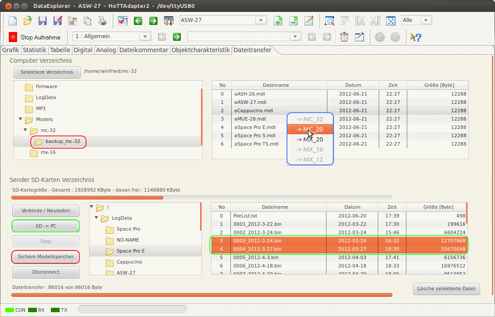

Der gezeigte Gerätedialog dient zur Konfiguration der Anzeige der ausgelesenen Daten. Über einen Dateiauswahldialog, erreichbar über "import HoTT Datei", können auch neue Dateien eingelesen werden. Start/Stop Live-Datenaufnahme über den konfigurierten seriellen Port. Die Auswahl der Übertragungsgeschwindigkeit legt auch das verwendete Protokoll fest. 115200 Baud für die mx-12 (#33112), mx-16 (#33116), mx-20 (#33124), mc-32 (#33032), 19200 Baud für mx-12 (#4754), mx-16 (#4755), mc-19,22,24(#33300 Modul, #33301 Modul, #33302 Modul). Das 19200 Baud Protokoll unterstützt alte (legacy V3), sowie neue Firmware V4.
Hinweis: Kurven, die lediglich Nullen als Daten enthalten, werden automatisch ausgeblendet. Durch doppelte Selektion einer nicht sichtbaren Kurve kann man diese Kurve trotzdem sichtbar schalten!
Achtung: Ist der Schalter Kanäle in dem HoTTAdapter Gerätedialog, oder beim HoTTAdapter2, die Konfiguration Kanäle, gewählt werden alle Daten eingelesen, also alle zehn Millisekunden. Dann werden hier Pakete angezeigt und ausgewertet, die Rx/Tx = 0 dBm als Wert haben. Diese Pakete werden als verlorene Pakete vom Rückkanal bezeichnet und in der Kurve Rx->Tx-PLoss dargestellt. Diese Kurve gibt es beim HoTTAdapter nur in den Empfängerdaten. Beim HoTTAdapter2 ist sie immer zu sehen, nur die Rx/Tx-Kurven werden beeinflusst. Die verlorenen Pakete werden nur unvollständig übertragen und werden normalerweise bei der Auswertung übersprungen. Kanaldaten sind 16 zusätzliche Zeitwerte, die bei dieser Konfiguration eingelesen werden, das Einlesen dauert hier auch entsprechend länger.
Tipp: Da der HoTTAdapter GPS-Daten anzeigt und verarbeitet, können diese auch als Google Earth-Dateien (KMZ) exportiert bzw. direkt angezeigt werden. Nähere Beschreibung dazu siehe Toolbar -> Google Earth. Mit dem HoTTAdapter2 werden alle empfangenen Messwerte auf einer Zeitachse dargestellt. Es gibt verschiedene Anwenderkonfigurationen, mit unterschiedlichen statistischen Auswertungen der eventuell vorhandenen Motorlaufzeit und dadurch entstehender Kapazitätsverbrauch.
Über den Tabulator Dateitransfer ist das transferieren von Dateien über die serielle Verbindung mit dem Sender und deren SD-Karte möglich.

Hinweis: Serielle Kommunikation mit dem Sender und deren SD-Karte ist nur mit Sendern unterstützt, die 115200 Baud verwenden! Es ist aus Zeitgründen nicht empfehlenswert, große Dateien auf diesem Weg zu übertragen. Durch die langsame Übertragung wird doch einige Zeit dafür verbraucht, der Sender könnte wegen zu geringer Spannung abschalten.
Hinweis: Mikrokopter-GPS-Daten werden in Dezimalgrad abgelegt (Einheit von Breitengrad und Längengrad in [°])! Zur Anzeige von Mikrokopter Daten gibt es die HoTTAdapter mit angehängtem 'M', wie Mikrokopter.